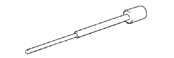
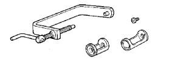
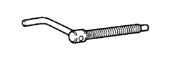
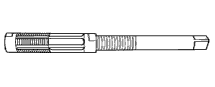
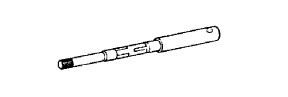
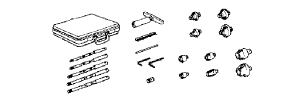
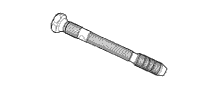
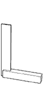
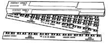

Cylinder Head Assembly (2GR-FE) Preparation [Disassembly]
| 09201-10000 | Valve Guide Bushing Remover & Replacer Set | |
 | (09201-01050) | Valve Guide Bushing Remover & Replacer 5 |
 | 09202-70020 | Valve Spring Compressor |
 | (09202-00010) | Attachment |
 | (09202-01010) | Arm |
 | (09202-01020) | Bolt Set |
 | 09950-70010 | Handle Set |
 | (09951-07100) | Handle 100 |
 | 09010-3C110 | Hexagon Socket Wrench Set |
 | (09013-6C130) | Socket Hexagon 10mm |
 | 09013-7C120 | Straight Hexagon 14mm |
 | 09072-1C200 | Vernier Caliper 150mm |
 | R-11A | Hand Reamer Usable Range 5.16 to 5.56mm Supplied by Banzai Ltd. |
| R-3A | Hand Reamer Usable Range 10.25 to 11mm Supplied by Banzai Ltd. | |
 | TRW-6 | T-handle Tap Holder Supplied by Banzai Ltd. |
| FP-11A | Hand Reamer Usable Range 5.16 to 5.56mm Supplied by Iyasaka Co., Ltd. | |
| FP-3A | Hand Reamer Usable Range 10.25 to 11mm Supplied by Iyasaka Co., Ltd. | |
| TT-45 | T-handle Tap Holder Supplied by Iyasaka Co., Ltd. |
 | N-150-5.5 | Pilot Stem (5.5) Supplied by Banzai Ltd. and Iyasaka Co., Ltd. |
| N-206 | Cutter Head 75° Available from Banzai Ltd. / Iyasaka Ltd. | |
 | TB-524 | Valve Seat Cutter Set Supplied by Banzai Ltd. and Iyasaka Co., Ltd. |
| (N-205 ) | Cutter Head60° Supplied by Banzai Ltd. and Iyasaka Co., Ltd. | |
| (N-230 ) | Cutter Head30°×45° Supplied by Banzai Ltd. and Iyasaka Co., Ltd. | |
| (N-237 ) | Cutter Head30°×45° Supplied by Banzai Ltd. and Iyasaka Co., Ltd. | |
| (N-240 ) | Hexagon Wrench Supplied by Banzai Ltd. and Iyasaka Co., Ltd. | |
| (N-241 ) | Hexagon Wrench Supplied by Banzai Ltd. and Iyasaka Co., Ltd. | |
| (N-505 ) | T-handle Wrench Supplied by Banzai Ltd. and Iyasaka Co., Ltd. | |
 | TP-24 | Pin Vise Supplied by Banzai Ltd. and Iyasaka Co., Ltd. |
 | 2046-08 | Dial Indicator (10mm) Supplied by Banzai Ltd. |
 | 25MB | Micrometer Measuring Range: 0 to 25mm Supplied by Banzai Ltd. |
 | DCG-15A | Dial Caliper Gauge Measuring Range: 5 to 15mm Supplied by Banzai Ltd. |
| DCG-30A | Dial Caliper Gauge Measuring Range: 10 to 30mm Supplied by Banzai Ltd. |
 | S2-10 | Square Supplied by Banzai Ltd. |
 | SE-50 | Straightedge Supplied by Banzai Ltd. |
 | TMA-20 | Thermometer Supplied by Banzai Ltd. |
| M110-25 | Micrometer Measuring Range 0 to 25mm Supplied by Iyasaka Co., Ltd. |
| SE-5 | Straightedge Supplied by Iyasaka Co., Ltd. |
| SSD-10 | Square Supplied by Iyasaka Co., Ltd. | |
| TH-10A | Thermometer Supplied by Iyasaka Co., Ltd. |
| TM-110 | Dial Indicator (10mm) Supplied by Iyasaka Co., Ltd. |
| YC-1 | Dial Caliper Gauge Measuring Range: 10 to 30mm Supplied by Iyasaka Co., Ltd. |
| YS-2 | Dial Caliper Gauge Measuring Range: 5 to 15mm Supplied by Iyasaka Co., Ltd. |
 | MB-B | Magnetic Base Supplied by Banzai Ltd. and Iyasaka Co., Ltd. |
 | PG-1 | Press Gauge Measuring Range: 0.025 to 0.076 Supplied by Banzai Ltd. and Iyasaka Co., Ltd. |
| PR1 | Press Gauge Measuring Range: 0.051 to 0.152 Supplied by Banzai Ltd. and Iyasaka Co., Ltd. |
| Prussian Blue | ||
| Dye Penetrant Flaw Detector (Red Check) | ||
| Wooden Block | ||
| Compound (Extra Fine to Fine) |